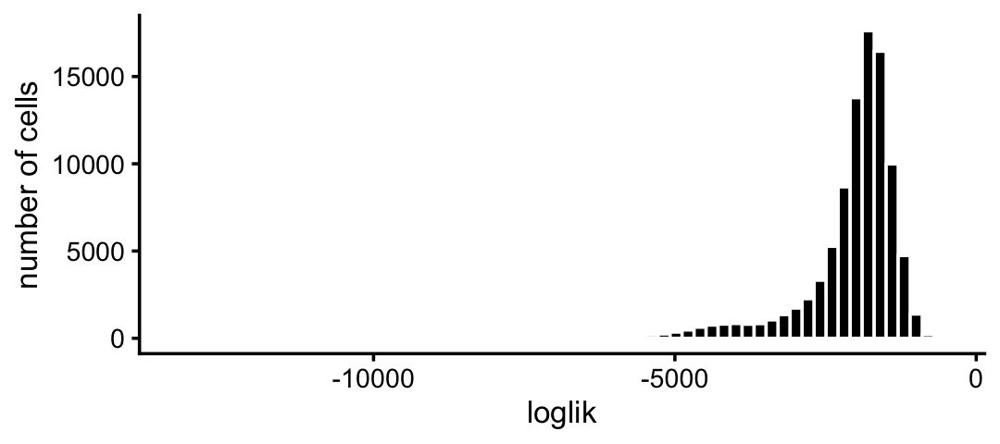
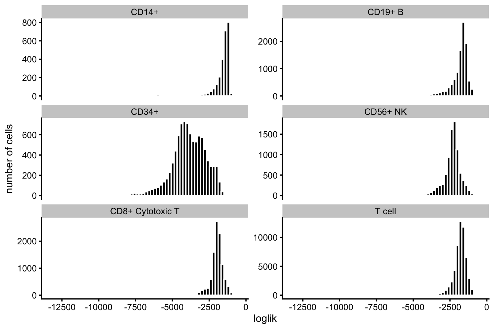
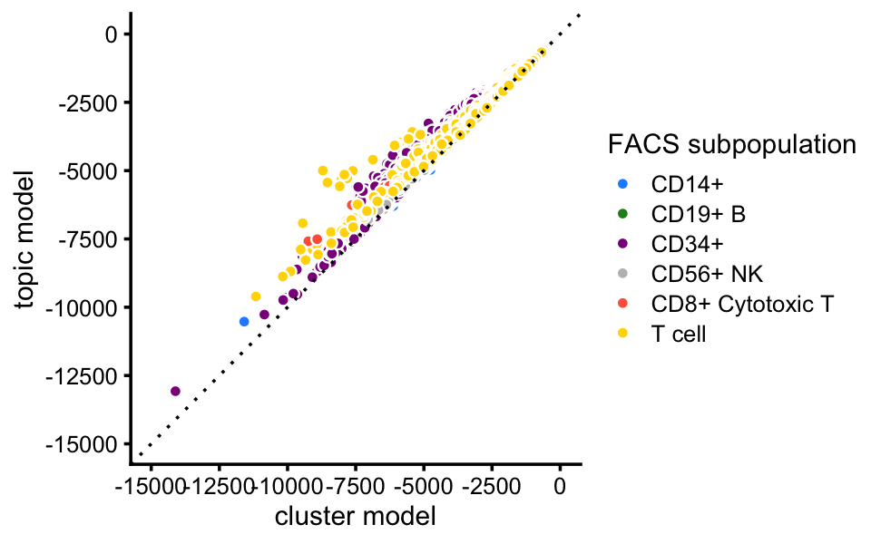

Examine topic-model-based single-cell likelihoods in FACS-purified PBMC data
Peter Carbonetto
Last updated: 2021-01-04
Checks: 7 0
Knit directory: single-cell-topics/analysis/
This reproducible R Markdown analysis was created with workflowr (version 1.6.2.9000). The Checks tab describes the reproducibility checks that were applied when the results were created. The Past versions tab lists the development history.
Great! Since the R Markdown file has been committed to the Git repository, you know the exact version of the code that produced these results.
Great job! The global environment was empty. Objects defined in the global environment can affect the analysis in your R Markdown file in unknown ways. For reproduciblity it’s best to always run the code in an empty environment.
The command set.seed(1) was run prior to running the code in the R Markdown file. Setting a seed ensures that any results that rely on randomness, e.g. subsampling or permutations, are reproducible.
Great job! Recording the operating system, R version, and package versions is critical for reproducibility.
Nice! There were no cached chunks for this analysis, so you can be confident that you successfully produced the results during this run.
Great job! Using relative paths to the files within your workflowr project makes it easier to run your code on other machines.
Great! You are using Git for version control. Tracking code development and connecting the code version to the results is critical for reproducibility.
The results in this page were generated with repository version 0881181. See the Past versions tab to see a history of the changes made to the R Markdown and HTML files.
Note that you need to be careful to ensure that all relevant files for the analysis have been committed to Git prior to generating the results (you can use wflow_publish or wflow_git_commit). workflowr only checks the R Markdown file, but you know if there are other scripts or data files that it depends on. Below is the status of the Git repository when the results were generated:
Ignored files:
Ignored: data/droplet.RData
Ignored: data/pbmc_68k.RData
Ignored: data/pbmc_purified.RData
Ignored: data/pulseseq.RData
Ignored: output/droplet/diff-count-droplet.RData
Ignored: output/droplet/fits-droplet.RData
Ignored: output/droplet/rds/
Ignored: output/pbmc-68k/fits-pbmc-68k.RData
Ignored: output/pbmc-68k/rds/
Ignored: output/pbmc-purified/diff-count-pbmc-purified.RData
Ignored: output/pbmc-purified/fits-pbmc-purified.RData
Ignored: output/pbmc-purified/rds/
Ignored: output/pulseseq/diff-count-pulseseq.RData
Ignored: output/pulseseq/fits-pulseseq.RData
Ignored: output/pulseseq/rds/
Untracked files:
Untracked: .DS_Store
Untracked: analysis/clustering-pbmc-purified.rds
Untracked: plots/
Unstaged changes:
Modified: analysis/clusters_purified_pbmc.Rmd
Note that any generated files, e.g. HTML, png, CSS, etc., are not included in this status report because it is ok for generated content to have uncommitted changes.
These are the previous versions of the repository in which changes were made to the R Markdown (analysis/loglik_purified_pbmc.Rmd) and HTML (docs/loglik_purified_pbmc.html) files. If you’ve configured a remote Git repository (see ?wflow_git_remote), click on the hyperlinks in the table below to view the files as they were in that past version.
| File | Version | Author | Date | Message |
|---|---|---|---|---|
| Rmd | 0881181 | Peter Carbonetto | 2021-01-04 | workflowr::wflow_publish(“loglik_purified_pbmc.Rmd”) |
| html | 9f648fd | Peter Carbonetto | 2021-01-04 | Added histograms to loglik_purified_pbmc analysis. |
| Rmd | 8e92707 | Peter Carbonetto | 2021-01-04 | workflowr::wflow_publish(“loglik_purified_pbmc.Rmd”) |
| Rmd | 5b1983f | Peter Carbonetto | 2021-01-03 | A few minor changes to the analysis of the purified PBMC data. |
| html | 134ea78 | Peter Carbonetto | 2021-01-03 | Updated the overview page. |
| Rmd | 83151f0 | Peter Carbonetto | 2021-01-03 | workflowr::wflow_publish(“index.Rmd”) |
Here we calculate single-cell likelihoods to assess how well the multinomial topic model captures expression in different cells and cell types.
Load the packages used in the analysis below.
library(Matrix)
library(fastTopics)
library(ggplot2)
library(cowplot)
source("../code/plots.R")Load the count data, the \(K = 6\) topic model fit, and the 7 clusters identified in the clustering analysis
load("../data/pbmc_purified.RData")
fit <- readRDS(file.path("../output/pbmc-purified/rds",
"fit-pbmc-purified-scd-ex-k=6.rds"))$fit
fit <- poisson2multinom(fit)
samples <- readRDS("../output/pbmc-purified/clustering-pbmc-purified.rds")Calculate the multinomial topic model likelihood for each cell.
loglik <- loglik_multinom_topic_model(counts,fit)This can be used to assess how well the topic model “fits” each cell.
pdat <- data.frame(loglik)
p1 <- ggplot(pdat,aes(loglik)) +
geom_histogram(bins = 64,color = "white",fill = "black") +
scale_x_continuous(breaks = seq(-20000,0,2500)) +
labs(y = "number of cells") +
theme_cowplot(font_size = 10)
print(p1)
| Version | Author | Date |
|---|---|---|
| 9f648fd | Peter Carbonetto | 2021-01-04 |
Most of the poorly fit cells are in the CD34+ subpopulation:
x <- as.character(samples$celltype)
x[x == "CD14+ Monocyte"] <- "CD14+"
x[x == "CD4+/CD45RA+/CD25- Naive T"] <- "T cell"
x[x == "CD4+/CD45RO+ Memory"] <- "T cell"
x[x == "CD8+/CD45RA+ Naive Cytotoxic"] <- "T cell"
x[x == "CD4+ T Helper2"] <- "T cell"
x[x == "CD4+/CD25 T Reg"] <- "T cell"
x <- factor(x)
pdat <- data.frame(loglik = loglik,celltype = x)
p2 <- ggplot(pdat,aes(x = loglik)) +
geom_histogram(bins = 64,color = "white",fill = "black") +
facet_wrap(vars(celltype),scales = "free_y",ncol = 2) +
scale_x_continuous(breaks = seq(-20000,0,2500)) +
labs(y = "number of cells") +
theme_cowplot(font_size = 9)
print(p2)
| Version | Author | Date |
|---|---|---|
| 9f648fd | Peter Carbonetto | 2021-01-04 |
Here, we compare the single-cell likelihoods under the multinomial topic model against the likelihoods under a simple “hard clustering” model in which the cells in each FACS subpopulation share the same underlying pattern of expression. This serves as a simple “sanity check”, as we expect the fit to improve with the more flexible topic model.
fit_subpop <- init_poisson_nmf_from_clustering(counts,x)
fit_subpop <- poisson2multinom(fit_subpop)
loglik_subpop <- loglik_multinom_topic_model(counts,fit_subpop)Indeed, the topic model provides a better fit for almost all cells:
facs_colors <- c("dodgerblue", # B cells
"forestgreen", # CD14+
"darkmagenta", # CD34+
"gray", # NK cells
"tomato", # cytotoxic T cells
"gold") # T cells
pdat <- data.frame(x = loglik_subpop,y = loglik,celltype = x)
p3 <- ggplot(pdat,aes(x = x,y = y,fill = celltype)) +
geom_point(shape = 21,color = "white") +
geom_abline(intercept = 0,slope = 1,linetype = "dotted") +
scale_x_continuous(limits = c(-15000,0),breaks = seq(-20000,0,2500)) +
scale_y_continuous(limits = c(-15000,0),breaks = seq(-20000,0,2500)) +
scale_fill_manual(values = facs_colors) +
labs(x = "cluster model",y = "topic model",fill = "FACS subpopulation") +
theme_cowplot(font_size = 9)
print(p3)
The improvement in fit is greatest for the CD34+ and T cell FACS subpopulations:
p4 <- ggplot(pdat,aes(x = x,y = y,fill = celltype)) +
geom_point(shape = 21,color = "white") +
geom_abline(intercept = 0,slope = 1,linetype = "dotted") +
facet_wrap(vars(celltype)) +
scale_x_continuous(limits = c(-15000,0),breaks = seq(-20000,0,5000)) +
scale_y_continuous(limits = c(-15000,0),breaks = seq(-20000,0,5000)) +
scale_fill_manual(values = facs_colors) +
labs(x = "cluster model",y = "topic model",fill = "FACS subpopulation") +
theme_cowplot(font_size = 9)
print(p4)
sessionInfo()
# R version 3.6.2 (2019-12-12)
# Platform: x86_64-apple-darwin15.6.0 (64-bit)
# Running under: macOS Catalina 10.15.7
#
# Matrix products: default
# BLAS: /Library/Frameworks/R.framework/Versions/3.6/Resources/lib/libRblas.0.dylib
# LAPACK: /Library/Frameworks/R.framework/Versions/3.6/Resources/lib/libRlapack.dylib
#
# locale:
# [1] en_US.UTF-8/en_US.UTF-8/en_US.UTF-8/C/en_US.UTF-8/en_US.UTF-8
#
# attached base packages:
# [1] stats graphics grDevices utils datasets methods base
#
# other attached packages:
# [1] cowplot_1.0.0 ggplot2_3.3.0 fastTopics_0.4-13 Matrix_1.2-18
#
# loaded via a namespace (and not attached):
# [1] ggrepel_0.9.0 Rcpp_1.0.5 lattice_0.20-38
# [4] tidyr_1.0.0 prettyunits_1.1.1 assertthat_0.2.1
# [7] zeallot_0.1.0 rprojroot_1.3-2 digest_0.6.23
# [10] R6_2.4.1 backports_1.1.5 MatrixModels_0.4-1
# [13] evaluate_0.14 coda_0.19-3 httr_1.4.2
# [16] pillar_1.4.3 rlang_0.4.5 progress_1.2.2
# [19] lazyeval_0.2.2 data.table_1.12.8 irlba_2.3.3
# [22] SparseM_1.78 whisker_0.4 rmarkdown_2.3
# [25] labeling_0.3 Rtsne_0.15 stringr_1.4.0
# [28] htmlwidgets_1.5.1 munsell_0.5.0 compiler_3.6.2
# [31] httpuv_1.5.2 xfun_0.11 pkgconfig_2.0.3
# [34] mcmc_0.9-6 htmltools_0.4.0 tidyselect_0.2.5
# [37] tibble_2.1.3 workflowr_1.6.2.9000 quadprog_1.5-8
# [40] viridisLite_0.3.0 crayon_1.3.4 dplyr_0.8.3
# [43] withr_2.1.2 later_1.0.0 MASS_7.3-51.4
# [46] grid_3.6.2 jsonlite_1.6 gtable_0.3.0
# [49] lifecycle_0.1.0 git2r_0.26.1 magrittr_1.5
# [52] scales_1.1.0 RcppParallel_4.4.2 stringi_1.4.3
# [55] farver_2.0.1 fs_1.3.1 promises_1.1.0
# [58] vctrs_0.2.1 tools_3.6.2 glue_1.3.1
# [61] purrr_0.3.3 hms_0.5.2 yaml_2.2.0
# [64] colorspace_1.4-1 plotly_4.9.2 knitr_1.26
# [67] quantreg_5.54 MCMCpack_1.4-5